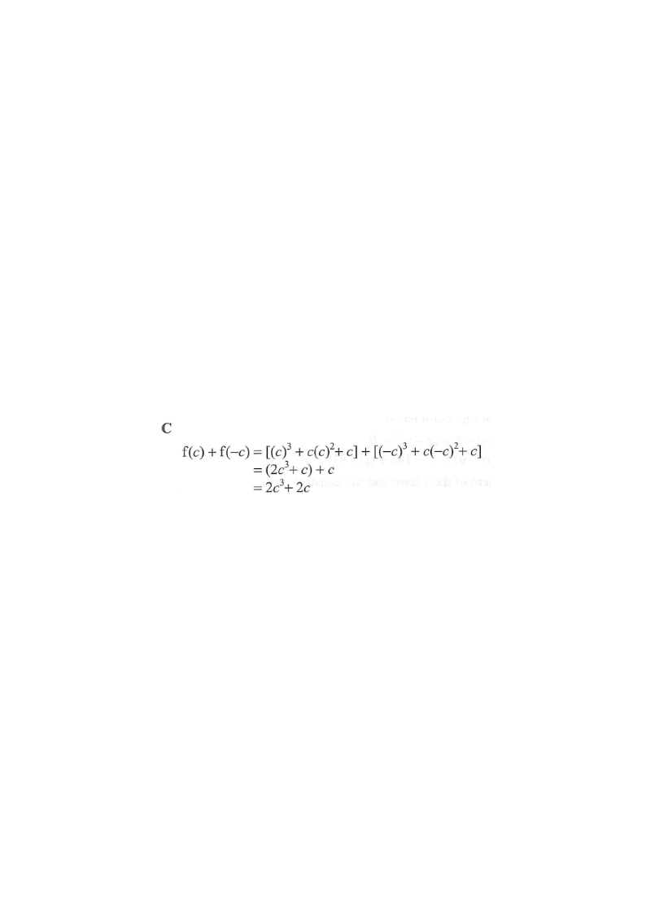

Decomposition of a cubic into even and odd parts
Question. Let $c$ be a constant. If $f(x) = x^3 + cx^2 + c$, then $f(c) + f(-c) =$

Step-by-step solution
$f(x) = x^3 + cx^2 + c$, where $c$ is a constant.
The purple curve in the figure is the whole cubic $f$. Note the quadratic term $cx^2$ and the constant $c$ do not change sign when $x$ is replaced by $-x$.
Hint: We need $f(c)$ and $f(-c)$,so substitute $x=c$ and $x=-c$ separately first.
(c)^{2}+c\) Putting \(x=c\) gives \(c^{3}+c^{3}+c=2c^{3}+c\), since \(c\cdot c^{2}=c^{3}\).
$f(c) = c^3 + c\,
(c)^2 + c = c^3 + c^3 + c = 2c^3 + c$
Careful: $c\cdot c^2 = c^3$, not $c^2$.
Hint: $(c)^3 = c^3$ and $c\cdot c^2 = c^3$ — the cubic term doubles.$f(-c) = (-c)^3 + c\,(-c)^2 + c = -c^3 + c^3 + c = c$
The odd term changes sign;
the quadratic and constant terms do not.
so $c\cdot(-c)^2 = +c^3$.
$f(c) + f(-c) = (2c^3 + c) + (c) = 2c^3 + 2c$
The $-c^3$ from $f(-c)$ cancels part of the $2c^3$ from $f(c)$?
No — watch carefully: the $c^3$-terms are $c^3$ and $-c^3$, but each expression also carries an extra $c^3$ from $c\,x^2$.
and $c + c = 2c$.
Write $f$ as an even part plus an odd part:
$\underbrace{cx^2+c}_{\text{even } E(x)} \;+\; \underbrace{x^3}_{\text{odd } O(x)}$
For any function, $f(x)+f(-x) = 2E(x)$. With $x=c$:
$f(c)+f(-c) = 2E(c) = 2(c\cdot c^2 + c) = 2c^3 + 2c$
Hint: The odd part always cancels;only the even part survives — doubled.
| $c$ | $f(c)$ | $f(-c)$ | $f(c)+f(-c)$ | $2c^3+2c$ |
|---|---|---|---|---|
| $1$ | $3$ | $1$ | $\mathbf{4}$ | $4$ ✓ |
| $2$ | $18$ | $2$ | $\mathbf{20}$ | $20$ ✓ |
| $-1$ | $1$ | $-3$ | $\mathbf{-2}$ | $-2$ ✓ |
The green dot in the figure tracks $f(c)+f(-c)$ as $c$ changes — it always lands on $2c^3+2c$.
Question. Let \(c\) be a constant. If \(f(x)=x^{3}+cx^{2}+3c\), find \(f(c)+f(-c)\).